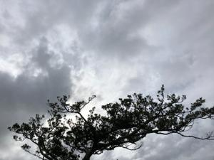
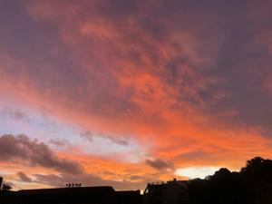

うるがいの話 ある日
最新: 炊飯器が不調【うるがいの話 ある日】とは 一日だけのプログです
『うるがいの話』の最新一日だけのプログで、通信料が少なく経済的だ。カニの画像をクリックすると全ての日付が載る『うるがいの話』サイトを表示します
|
|
【うるがいの話】 うるがい(ｳﾙｶﾞｲ urugai)とは、『もずくがに』の名前でとても大きくなります。 |
|---|---|
|
|
【カミマヤーの話】 猫のことを方言でマヤーといいます。カミマヤー（kamimayaa）とは、神の猫のことです。 |
|
【たながぁの音楽】 たながぁ（ﾀﾅｶﾞｰ tanagaa）とは手長えびのことで、何種類かあり大きいのは車 エビぐらいになります。 |

|
【ぶながぁの話】 ぶながぁ(ﾌﾞﾅｶﾞｰ bunagaa)とは、赤い髪の毛、赤い身体、そして身長は１ｍ２０ｃｍ ぐらい、川の蟹を食べているの目撃された。場所は沖縄県国頭郡大宜味村のと ある村僕の隣近所に住んでいる爺さんから、聞いた話です。 |
|
|
【ギーマの話】 ギーマ(giima)とは、山原の里山に咲くスズランに似た、 花を付けます。実は食べられます、 気が付くと口の周りが紫になっています。 |
2022年10月17日 (月）炊飯器が不調
16:39
 
圧力ⅠＨ式炊飯器は一気に圧をかけることで、お米に栄養を蓄えたまま炊き上
げられる炊飯器。炊飯のボタンを押すとＥ－１７と表示され、炊飯できない。
マニュアルを見て対応策をするが、解決しない。この場合は、故障ですとあっ
た。とうとう、お釈迦さまか、とギブアップしたところ、ヨメがダーと何やら
炊飯器をガチャガチャいじる。そして、見事炊飯が機能し始めた。おー、私に
はこんな、恐ろしいことは出来ない。と、新しい炊飯器を買うために、電気店
へいく、ヨメが新品を選ぶ、が残念ながら在庫がない、石川の店舗にはあると
のこと、数日で取り寄せられというので買うことにした。ということは、それ
でまでは、ヤバイ炊飯器を使わないといけない。不安な日が、続く。
昼、裂けた前歯を治療するために歯医者へ行く。前歯に負担をかけないように
するが、裂けた歯に食べ物が当たる。裂けた歯が、グラグラ動く。歯医者へ行
くと、裂けた部分の歯をさっさと、全く痛みもなく取り出してくれた。どうも
裂けた歯は、歯と歯の間に挟まっていただけのようだった・・、裂けた箇所の
部分を何やら材料で補填し、見かけ上完全な前歯のかたちに直してくれた。治
療は終了、スッキリする。マイドながら、歯は命。扇風機の風がやたら冷たい
なんと、只今の外温は２３度である。
１６時３３分 ビットコインの総資産 ￥８、２７７↑